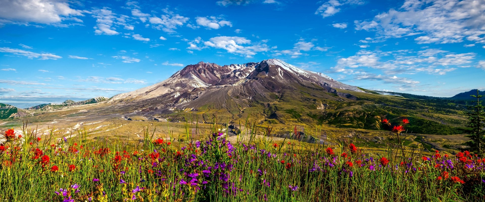
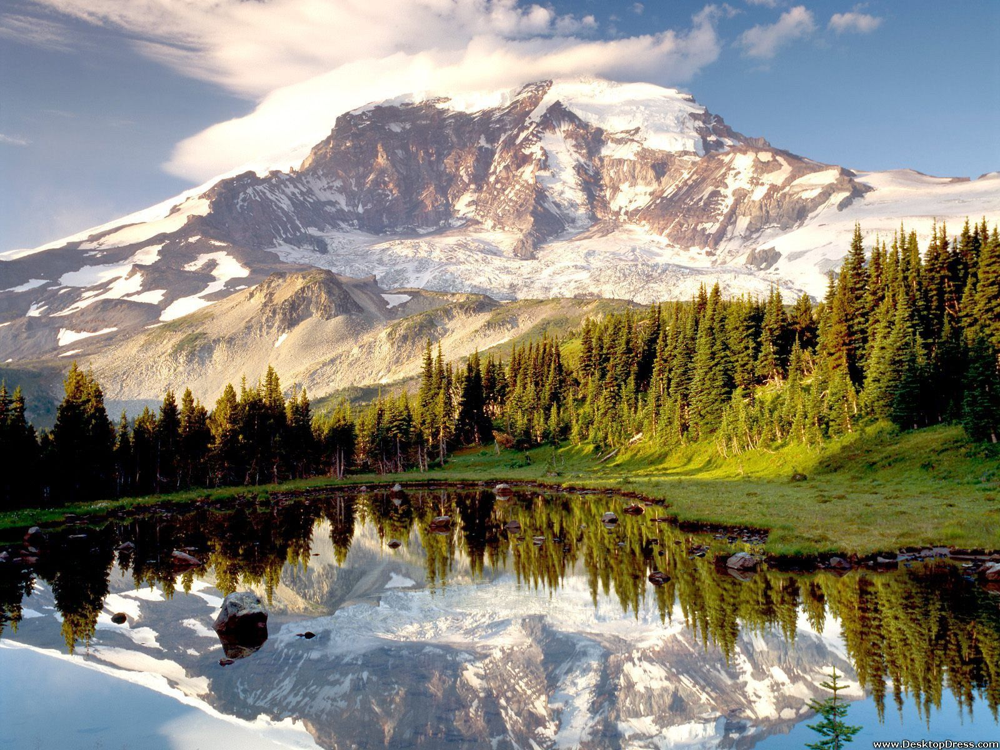

This Wiki page covers the events of the Mount Saint. Helens eruption as well as its effects on the world.
Mount Saint Helens now:

Mount Saint Helens, located in Skamania County, Washington, erupted over 40 years ago, now has become a
beautiful travel destination for those who love to explore the outdoors. Since the eruption, many things have changed. Not only has the landscape and surroundings
but the world of technology as well, specifically gis and other technolgy used to learn about and track natural disasters. While the eruption has caused many
terrible things, it has also further advanced the world and pushed society into growing in all areas.
